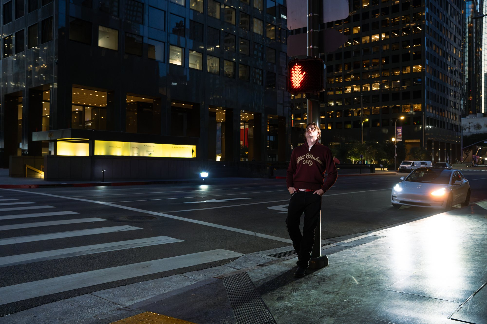
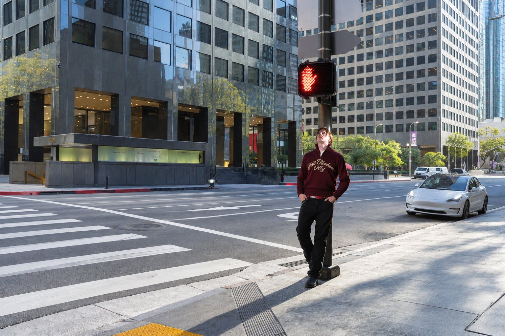
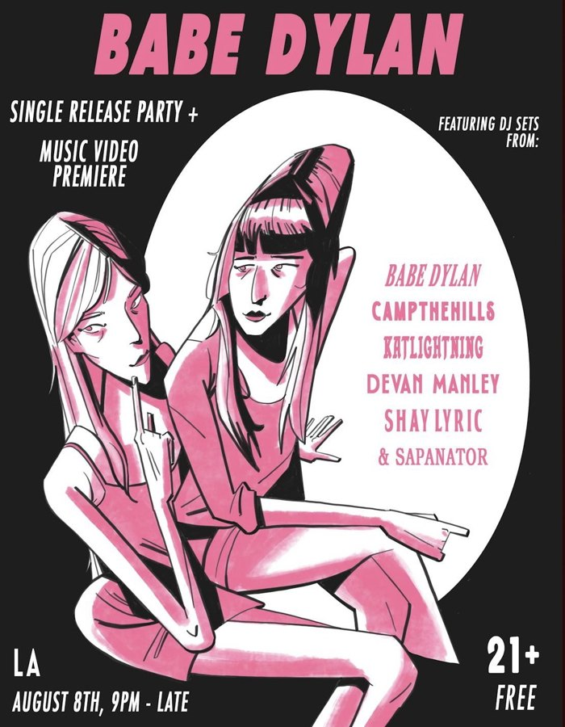
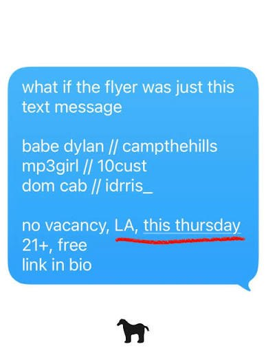

music
out now
Stream now
down with the snow
official music videocampthehills
campthehills is a self-producing independent artist and composer from Missoula, Montana, currently based in Los Angeles.
Production credits

shows
liveUpcoming
Dec 1, 2026
New York, NY—venue to be announced
Details soon
Past
Aug 8
Los Angeles—Babe Dylan release party


Jul 9 Los Angeles—No Vacancy
May 15 West Hollywood—The Roxy Theatre
Venue and tickets go up here first — get notified.
credits
productioncampthehills began his music career producing for other artists under the name Spaceman. Collaborations under his previous tag include:
Production and placement inquiries: contact@campthehills.net · every credit on Genius
contact
inquiriesShow offers, press, sync licensing and production inquiries. Complete the form below, or write directly to contact@campthehills.net.
Based in
Los Angeles, California.
Press kit
Press photos at print and web resolution, bio, artist mark and cover artwork.
DownloadZIP · 7.6 MB